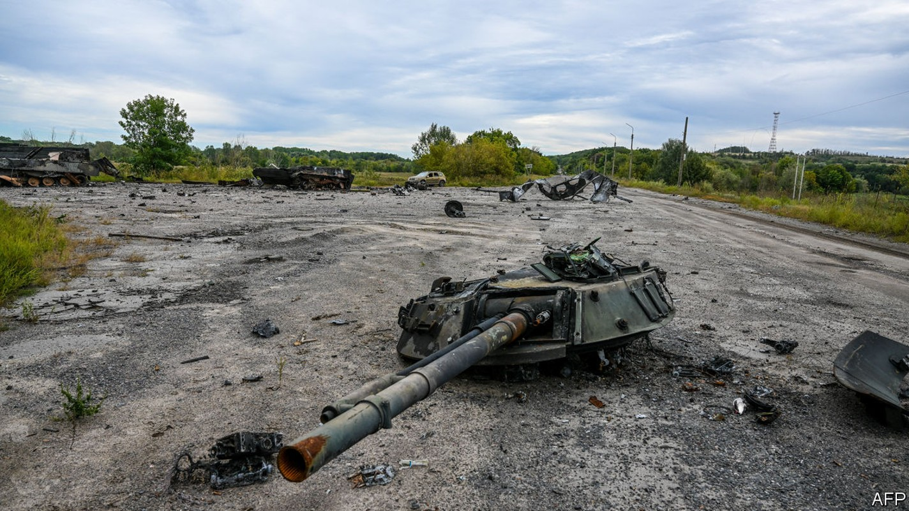
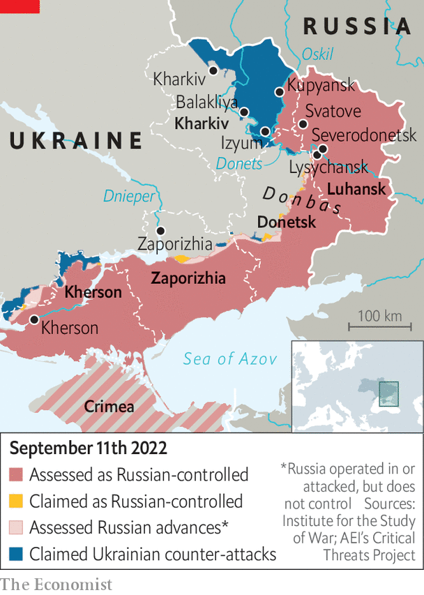

Ukraine’s Kharkiv counter-offensive has the Kremlin on the back foot

UKRAINE’S SURPRISE counter-offensive, which began on September 6th, continues to overwhelm Russian defences in the country’s north-east. On the morning of September 11th, Valery Zaluzhny, Ukraine’s military chief, announced his forces had retaken more than 3,000 square kilometres in 11 days—vastly more than Russia had captured in several months of grinding combat since April. Other accounts suggest the figure may be nearly 9,000 square kilometres, an area roughly the size of Cyprus.
There are widespread reports of Russian soldiers beating panicked retreats, of encircled units, and of large quantities of abandoned military hardware. The recapture of two logistical hubs, Izyum and Kupyansk, has in effect ended Russia’s grand plans to seize control of the entire Donbas, Ukraine’s eastern region. It also opens up the prospect of Ukraine regaining towns, like Severodonetsk, that Russia had clawed away only after months of bloody fighting.

The rout of Russian units, which the Kremlin unconvincingly calls a “regrouping”, suggests the seven-month-old war may have reached a turning point. The counter-offensive in the Kharkiv region certainly took the Russian high command by surprise. It began on September 6th, after two days of intense artillery fire, as an operation to encircle the town of Balakliya. Over the next three days light units broke out eastwards to capture Kupyansk, a big rail and road hub.
By September 10th Izyum, another important hub nearby, was encircled after the majority of Russian forces fled east. Fighting continued into the morning of September 11th, but a map released by the Russian Ministry of Defence later that day appeared to suggest that its forces had withdrawn from virtually the entirety of Kharkiv province, to a new defensive line along the Oskil river. It is unclear how long this new line can last, with Ukrainian units still pushing east.
Ukraine’s secret counteroffensive hinged on its ability to deny Russian planes free movement near the front lines. That was possible thanks to new American-supplied anti-radar missiles, communications systems and air-defence guns, a military source says. But the source says the thrust had also benefited from “cunning” deception. The Ukrainians deliberately thinned out heavy weaponry from the attack force, with the initial breakthrough at Balakliya said to involve only 15 or so tanks, according to Russian reports. In fact, that was a ruse to make it seem as if the attack was a feint, intended merely to pin down Russian forces and prevent them from redeploying to defend against the supposed main counter-offensive further south, in Kherson region. The Russian high command was guilty of hubris. “They’ve always looked at us as a kind of younger brother”, says the source. “It’s time to start respecting us”.
At one stage, Ukrainian units were moving so fast that senior officials were unsure how far they had got. Open-source analysts who track the conflict were forced to redraw their maps hourly. Serhiy Haidai, the governor of Ukraine’s Luhansk region, said he believed it would be only “a matter of time” before Ukrainian troops crossed the Donets river and moved into Svatove, Rubizhne, Lysychansk and Severodonetsk—towns in the northern part of the Luhansk region, which Russia boasted of capturing in its entirety in early July.
Russians and local collaborators were already “running”, he said. “Their lines are just disintegrating.” But Ukraine’s next moves would be “measured”, calculated to avoid losses, he promised. Oleh Zhdanov, a former operational officer at Ukraine’s general staff, said Ukraine’s military leadership would try to develop the attack at a slower pace. “We have to consolidate support lines to the rear. It’s dangerous to go too fast.”
There is some speculation whether Ukraine might now exploit Russian disarray to strike elsewhere: either by bolstering a counterattack in Kherson, where progress continues in piecemeal fashion, albeit with heavy casualties, or by opening up a third axis of attack somewhere else. It is unclear whether Ukraine has a third fully-formed battlegroup ready. Ukraine’s generals are giving little away, and the military source remains tightlipped. Ukraine had mobilised the people, he says, but “whether the West has given us enough equipment is an open question.”
Some have speculated Ukraine could open another front in the Zaporizhia region, with a daring southern dash to the Azov sea to deny Vladimir Putin, Russia’s president, his land bridge to Crimea. Some Ukrainian officials had pressed for such an offensive before eventually settling on the Kherson attack. Mr Zhdanov said it was more likely that any operational reserve would be poured into the Izyum-Luhansk area to take advantage of Ukraine’s momentum there.
Ukraine’s offensive has caught the Kremlin off-guard and left it struggling to find a response. Pro-war Russian military bloggers are livid about Russia’s humiliation. They blame Russia’s generals; its defence minister, Sergei Shoigu; and increasingly Mr Putin himself. Igor Girkin, an ultra-nationalist who led Russia’s offensive in Donbas in 2014, predicted a complete defeat for Russian troops. “We have already lost, the rest is just a matter of time,” he told his nearly half-million subscribers on Telegram, a messaging platform popular among Russian military watchers. Michael Kofman, an expert at CNA, a think-tank, noted that the quality of Russian forces was falling and those in combat were not being rotated often enough to avoid exhaustion. “They do not have the manpower to sustain this war”, concluded Mr Kofman.
Mr Putin, meanwhile, seems oblivious to these problems. As Ukrainians fought their way to Izyum on September 10th, he continued with plans to open a grand ferris wheel at VDNKh, a Stalin-era theme park in Moscow. The ferris wheel was the largest in Europe, Mr Putin said, the perfect place for a family retreat. Disgruntled Russian bloggers observed, drily, that the frontlines had shifted so far east that they might be visible from the top. He said nothing of the reverses on the battlefield. Sergei Lavrov, Russia’s foreign minister, projected an air of confidence. Russia might be open to negotiations, he told a Russian television channel, but its adversaries “should understand that the longer they postpone this process, the more difficult it will be for them to negotiate with us”.
For the time being, Ukraine’s leaders believe negotiations are best conducted on the battlefield. In a speech on September 10th at the Yalta European Security Forum, a meeting of international diplomats, experts and politicians in Kyiv, Volodymyr Zelensky, Ukraine’s president, expressed irritation with unnamed Western leaders prodding him to do a deal with Mr Putin. He was in no mood to oblige. “Some leaders are pushing us into superfluous embraces,” he said. “No, we can’t allow ourselves to stop.”■